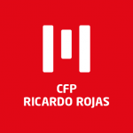

Me considero responsable, detallista, perseverante, puntual, organizada y empática. Poseo excelente predisposición tanto para trabajar en equipo como para llevar a cabo los objetivos de forma independiente. Siempre buscando nuevos retos para aplicar mis conocimientos y. a su vez, seguir aprendiendo.
- Transcripción de caracteres, de forma ágil y precisa, presentes en imágenes en español y portugués, siguiendo los criterios de calidad de la empresa.
Realización de visitas guiadas en el Museo de Ana Frank Argentina. Participación en Open House Buenos Aires (Nov 2019). Planificación y realización de visitas guiadas pedestres en plazas y barrios de CABA, City Tour en CABA y Full Day en San Antonio de Areco.
Aprendizaje: relevamiento de campo; armado de itinerarios y circuitos turísticos; contratación de seguros, servicios de transporte y restauración; armado de lista de pasajeros(CNRT); diseño de flyer; coordinación de grupos; trabajo en equipo y manejo de tiempo.
Aprendizaje: Nociones de Marketing Digital, Google Ads: Búsqueda y video
Aprendizaje: Nociones de dibujo y diseño, Corel y Photoshop
Aprendizaje: HTML, CSS, JavaScript, C#, SQL, DevOps
Aprendizaje: HTML, CSS, Bootstrap, JS, TypeScript, Angular, SQL, MySQL, Java
Aprendizaje: Gobstones, JavaScript y Ruby
Aprendizaje: - Diseño en WordPress, HTML y CSS.